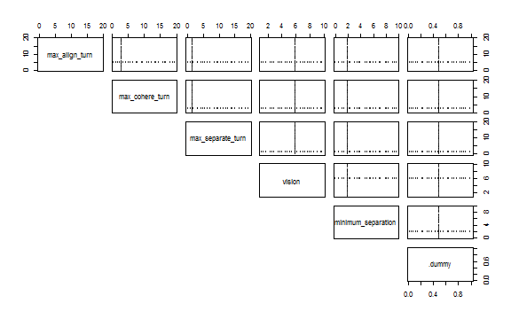
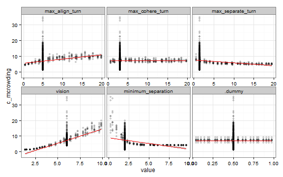

One-at-a-time (OAT) Method
This example is using NetLogo Flocking model (Wilensky, 1998) to demonstrate sensitivity analysis with OAT method.
As in Flocking example two measures of self-organization are defined:
- converergence is based on variance of birds’ orientations and
- mean crowding is average group size as experienced by individual.
Additionaly (because these measures are temporal):
- criteria evaluation expressions are aggregating those measures over time (note the
eval_criteriaelement).
Instead of using a list of parameter values (which would be interpreted in nlexperiment as all combinations of parameter values), parameter value sets are defined with nl_param_oat function.
It takes minimum and maximum values as a parameter range and median value as default value. Each parameter is sampled over its range (with \(n\) values) while other parameters are fixed to default value. Default value is calculated from parameter values with median so three values are enough for each parameter (min, median and max). Parameters with only one value are treated as constants.
experiment <- nl_experiment(
model_file = "models/Sample Models/Biology/Flocking.nlogo",
setup_commands = c("setup", "repeat 100 [go]"),
iterations = 5,
param_values = nl_param_oat(
n = 25,
world_size = 50,
population = 80,
max_align_turn = c(0, 5, 20),
max_cohere_turn = c(0, 3, 20),
max_separate_turn = c(0, 1.5, 20),
vision = c(1, 6, 10),
minimum_separation = c(0, 2, 10),
.dummy = c(1:0)
),
mapping = nl_default_mapping,
step_measures = measures(
converged = "1 -
(standard-deviation [dx] of turtles +
standard-deviation [dy] of turtles) / 2",
mean_crowding =
"mean [count flockmates + 1] of turtles"
),
eval_criteria = criteria(
c_converged = mean(step$converged),
c_mcrowding = mean(step$mean_crowding)
),
repetitions = 10, # repeat simulations 10 times
random_seed = 1:10
)To see the experiment design with scatter plots use nl_show_params function:
nl_show_params(experiment) 
Run the experiment:
result <- nl_run(experiment, parallel = TRUE) dat <- nl_get_result(result, type = "criteria")
library(tidyr)
dat_long <- gather_(dat, key = "parameter", value = "value",
c("max_align_turn", "max_cohere_turn", "max_separate_turn",
"vision", "minimum_separation", ".dummy"))library(ggplot2)
ggplot(dat_long, aes(x = value, y = c_converged)) +
geom_point(alpha = 0.3) +
stat_smooth(method = "lm", color = "red") +
facet_wrap(~ parameter, scales = "free_x") +
theme_bw()

ggplot(dat_long, aes(x = value, y = c_mcrowding)) +
geom_point(alpha = 0.2) +
stat_smooth(method = "lm", color = "red") +
facet_wrap(~ parameter, scales = "free_x") +
theme_bw() 